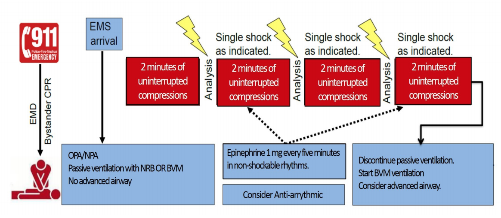

Treatment for all providers
- Routine patient care
- In situations where adequate bystander cardiopulmonary resuscitation (CPR) [good quality compressions/other care] is ongoing upon EMS arrival, proceed with BLS or ALS assistance as below. If no bystander care is in progress, begin CPR following current AHA ECC Guidelines.
- A defibrillator (AED or manual) should be applied as soon as available and ECG rhythm analysis should immediately follow. If indicated (VF/VT), electrical therapy should be delivered without delay. The initial shock should be delivered at the defibrillator manufacture’s recommended energy dose. Subsequent shocks should be administered as indicated every 2 minutes, interposed between two minute CPR duty cycles.
- Continuous compressions and delivery of electrical therapy should take priority over other care.
- Maintain good quality continuous compressions by switching providers every 2 minutes. Rhythm checks should occur at this time and pauses should be limited to &le 5 seconds.
- Pre-charge the defibrillator at 1:45 sec of each duty cycles to minimize pre-shock pauses if electrical therapy is indicated.
- Transport the patient to the nearest appropriate Hospital Emergency Facility
- CPR should be resumed immediately following the delivery of electrical therapy without a pulse check.
- If an automated CPR device (load-distributing or piston) is utilized, the time for application should be minimized.
- Continuous inline waveform capnography may be helpful in determining the quality of chest compressions identifying return of spontaneous circulation (ROSC).
- If the EtCO2 is < 10 mmHg, attempt to improve CPR quality.
- The first 4 cycles of CPR should include passive ventilation with a non-rebreather mask or BVM. Subsequently, avoid over-ventilation; ventilate at a rate of 10 bpm. Advanced airway management should not occur until after the 4th cycle of CPR and should not result in interruption of chest compressions.
- A blindly inserted airway device (BIAD) [e.g. i-Gel®, King® airway, laryngeal mask airway etc.) shall be the initial advanced airway of choice in all patients in cardiac arrest. Orotracheal intubation shall only be performed if the use a BIAD is insufficient to facilitate adequate ventilation. In cardiac arrest, studies indicate that orotracheal intubation offers no appreciable benefit to patient outcome when a BIAD is providing adequate ventilation. Additionally, interruptions in the delivery of chest compressions during attempts at orotracheal intubation may be harmful. The use of continuous waveform capnography confirming advanced airway placement is MANDATORY and must be monitored and documented.
- Regardless of proximity to a receiving facility, absent concern for provider safety, or traumatic etiology for cardiac arrest, continue resuscitative efforts for a minimum of 30 minutes prior to moving the patient to the ambulance or transporting the patient. BLS providers should request ALS if available.
- If after 30 minutes of resuscitation at the scene, the patient has organized electrical activity or a shockable rhythm or an EtCO2 ≥ 20 mmHg or signs of life (purposeful motor movement, eye opening) during CPR, consideration should be given to continuing resuscitative efforts at the scene
- If return of spontaneous circulation (ROSC) is achieved, manage patient per age appropriate Adult Post Cardiac Arrest Care
- Transport the patient to the nearest appropriate Hospital Emergency Facility. Per the Post Cardiac Arrest Care Protocol, patients with hemodynamic instability (MAP < 65 or SBP < 90, electrical instability (recurrent VF/VT, bradycardia recurring TCP or pharmacologic therapy), or STEMI should be transported to PCI capable facility.
- Identify possible treatable etiology of cardiac arrest and manage per appropriate protocol(s) as indicated:
- Hypovolemia
- Hypoxia
- Hydrogen Ion (acidosis)
- Hypothermia
- Hypo-hyperkalemia
- Tension Pneumothorax
- Tamponade (cardiac)
- Toxins
- Thrombosis (pulmonary embolism)
- Thrombosis (coronary)
Cardiac/Advanced
- Consider early interosseous placement (if available) or if difficult IV access is anticipated (access site above the diaphragm is preferred).
- EPINEPHRINE (1:10,000) 1 mg IV/IO every 5 min for non-shockable rhythms only.
- For ventricular fibrillation (VF) or pulseless ventricular tachycardia (VT):
- AMIODARONE 300 mg IV/IO, repeat 150 mg for VF/PVT refractory to the first dose and at least one defibrillation attempt.
- As alternative to amiodarone or for VF/PVT refractory to amiodarone, LIDOCAINE 100 mg IV/IO, repeat every 10 min X2.
- For refractory VF/PVT:
- Change defibrillator pads and apply 2nd set of pads at a new site.
- Consider Double Sequential External Defibrillation Procedure Protocol if resources allow.
- For pulseless electrical activity (PEA) arrest and suspected hypovolemia, LACTATED RINGER’S or NORMAL SALINE 500-1000 ml IV/IO (may repeat X1).
Paramedic
- Consider early interosseous placement (if available) or if difficult IV access is anticipated (access site above the diaphragm is preferred).
- EPINEPHRINE (1:10,000) 1 mg IV/IO every 5 min for non-shockable rhythms only
- Consider EPINEPHRINE by IV infusion at 0.5 mcg/kg/min in place of EPINEPHRINE by IV bolus.
- For ventricular fibrillation (VF) or pulseless ventricular tachycardia (VT):
- AMIODARONE 300 mg IV/IO, repeat 150 mg for VF/VT refractory to the first dose and at least one defibrillation attempt.
- As alternative to amiodarone or for VF/VT refractory to amiodarone, LIDOCAINE 100 mg IV/IO, repeat every 10 min X2.
- For recurrent VF/PVT:
- PROCAINAMIDE 1.5 gm IV/IO infused over 15 min.
- METOPROLOL 5 mg IV/IO over 1 min (may repeat every 5 min X3).
- For refractory VF/PVT:
- Change defibrillator pads and apply 2nd set of pads at a new site.
- PROCAINAMIDE 1.5 gm IV/IO infused over 15 min.
- METOPROLOL 5 mg IV/IO over 1 min (may repeat every 5 min X3).
- Consider Double Sequential External Defibrillation Procedure Protocol if resources allow.
- For pulseless electrical activity (PEA) arrest:
- LACTATED RINGER’S or NORMAL SALINE 500-1000 ml IV/IO (may repeat X1).
- Perform needle thoracostomy for suspected tension pneumothorax.
- For polymorphic ventricular tachycardia (Torsades de Pointes) or suspected hypomagnesemia, MAGNESIUM SULFATE 2 gm IV.
- For patients with CPR induced consciousness, consider KETAMINE 0.5-1 mg/kg IV and MIDAZOLAM 1 mg IV (may repeat every 5-10 min as required).
- Consider placement of a gastric tube to address gastric distention.